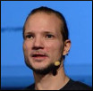
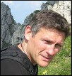

About JCP
Get Involved
Community Resources
Community News
FAQ
Contact Us
About JCP
Get Involved
Community Resources
Community News
FAQ
Contact Us

|
|
Java Community Process: Executive Committee Elections Nominees for 2017

|
The 2017 Fall Executive Committee Elections have started. This year, as defined in the JCP 2.10 Process Document, 8 Ratified, 3 Elected and 1 Associate Seats are open for election.
We have hosted a Public EC meeting and Meet the JCP EC Candidates meeting at JavaOne San Francisco as part of Java User
Group Sunday on 1 October.
We will host a Meet the JCP Executive Committee Candidates conference call on Thursday, 26 October at 10 AM PDT.
- Audio: +1 (866) 682-4770 (US) | Conference code: 138-6833 | Security code: 528222
- Webex: join the
Meet the EC Candidates Webex session
Please view the 2017 Executive Committee Voting and Participation record for reference.
Please refer to the Java Community Process EC Elections page for more information on the Executive Committee Elections.
Please refer to the Executive Committee Information page for more information on the current Executive Committee.
What follows are the qualification statements provided by the candidates for the Executive Committee, along with a brief biography of the person who would serve as the Member's representative on the Executive Committee if elected, and a position statement when one was provided.
| 2017 EXECUTIVE COMMITTEE RATIFIED SEAT CANDIDATES |
ARM
|
Arm and its partners are providing a bright future in the Enterprise space with a new range of server processors. We see Java technology as key to our customers success in this field and regard membership of the JCP of paramount importance for ensuring the Java Platform evolves in alignment with the Arm Architecture.
|
Rod Crawford
|
I am passionate about empowering people through technology, enabling them to garner and communicate relevant knowledge -- knowledge that relates to the time and place where they are and to the people around them. I've been part of the mobile computing revolution for 25 years, 20 of them at ARM. I work directly with many of the major open software technologies and companies, helping create new and exciting ways to compute on the go, and thus give a voice to the inhabitants of the global village.
|
| | |
Credit Suisse
|
Credit Suisse is a global bank headquartered in Zurich, serving clients through three regionally focused divisions:
Swiss Universal Bank, International Wealth Management and Asia Pacific. These regional businesses are supported by two other
divisions specializing in investment banking capabilities: Global Markets and Investment Banking & Capital Markets. The bank
has 530 offices and 22 booking centers located in over 50 countries. From the 46,000 employees, around 10,000 IT specialists
work in application and infrastructure IT departments, in roles ranging from architecture, development, and operations.
In 2010, Credit Suisse was elected in the JCP Executive Committee to be the first member to represent the customers of
Java technology. Customers want strong and open standards to secure their investments and to choose among a variety of
different products.
During our four terms in the JCP Executive Committee, we have had a good record of participation in EC Meetings and reviewed
JSRs as part of the technology government process. Having a long tradition in the development of Java EE specifications, we
have managed to increase our participation in both Java SE and EE Expert Groups as well as Specification Leads.
We would like to continue our work in the following areas:
- Bring in our customer view and argue for strong, open and stable standards that can be implemented by any vendor or
Open Source community for a competitive market, transparent license models, and easy JCP participation.
- Focus on technology governance and bring in our expertise in standardization and architecture governance. We complement
this "process-oriented view" with our customer view and rather technical background and thus will continue to argue for a
technical focus in the JCP EC.
- Continue our strong and active participation in Expert Groups and as Spec Leads, e.g., for the development, management,
and operations of enterprise-scale applications in the cloud.
|
Susanne Cech
|
Susanne Cech is member of Group CTO Strategy & Architecture. She focusses on the next generation application development and
hosting, that includes modern application architectures and development styles (PaaS and container frameworks), the integration
of new and existing application components on class and cloud environments, as well as DevOps. Susanne was the alternate in 2010
and has been the primary representative for the last 5.5 years. Prior to joining Credit Suisse, Susi obtained a PhD in Computer
Science from ETH Zurich where she implemented a dynamic updating system for Java programs.
|
Gary Field
|
Gary Field is a development lead within Global Markets IT Core Engineering and co-host for the Docklands London Java Community.
During his 21 years at Credit Suisse, he has developed enterprise solutions in C++, C# and Java. He has led architecture
initiatives for Fixed Income, Trading Technologies and Regulatory Reform. Today Gary is leading the development of modular,
cloud-native applications in Java, leveraging automation to create the next generation of scalable, maintainable systems.
Gary has an MEng in Software Engineering from Imperial College, University of London.
|
| | |
Fujitsu
|
Fujitsu has a long history of implementing Java technologies, going back to 1996. Fujitsu has implemented Java across what is probably the broadest range of platforms in the industry --- from Main Frames Java to Java-Enabled Telephones. In Japan and around the world, Fujitsu is marketing its Java EE certified Interstage Application Server.
Fujitsu is a very active player in the Java community. Fujitsu has been a member of the JCP/Executive Committee since its inception. Throughout the years, Fujitsu has an outstanding record of JCP/EC meeting attendance and JSR balloting. At JavaOne in 2011, Mike DeNicola from Fujitsu was recognized as the "JCP Member of the Year". Fujitsu has participated in most of the JCP/EC Press Events and JCP/EC Panels discussing the JCP and the role of the Executive Committee that have been held at JavaOne and in the US and Europe over the past several years.
Fujitsu has participated in and/or supported over fifty JSRs, including being Spec Lead and members of Expert Groups. Among these are revisions to the JCP Process (JCP 2.10, JCP2.9, JCP 2.8, JCP 2.7, JCP 2.6, and JCP 2.5) and merger of the JCP Executive Committees (JSR364). Fujitsu was active in the Expert Groups creating JSPA 2, Java EE 8, Java EE 7 and other key SE and EE umbrella JSRs. It has also participated in updating SIP Servlet Versions 1.1 and 2.0, plus various XML, Web Services, EJB, and JAIN JSRs.
Additionally, Fujitsu has strongly supported EJB application development and testing. It was a key member of DOPG (Distributed Object Promotion Group) in Japan which closed in 2011. Among other things, the group verified interoperability among member companies ORB products. It was the first group in the world to conduct EJB Interoperability Tests. Fujitsu is also a founding member of the Component Consortium for EJB and Fujitsu created a membership-based Component Center. Using the Fujitsu Interstage Application Server as the component runtime infrastructure, Fujitsu facilitates efficient application development by providing support services and assembling the newest set of EJB business components and standard EJB patterns. An application developer then adds Domain-specific and User-specific components.
Fujitsu Position Statement (.pdf file)
|
Kenji Kazumura
|
Kenji Kazumura has been working with Java for about 20 years since Java was born, and now he is Senior Professional Engineer of Java Technology at Fujitsu Limited in Japan. He is in charge of developing Java Virtual Machine for Interstage Application Server and various Fujitsu middleware products.
He has participated in the Expert Group of JSR 204 (Unicode Supplementary Character Support). He has optimized the several huge enterprise Java applications, specifically in the field of mobile communication and financial service, in order to run with high performance and reliability. These systems contribute a great deal to the social infrastructures in Japan.
He is now working to make the cloud and micro services environment be more useful by accelerating Java technology into this area.
|
| | |
Hewlett Packard Enterprise
|
HPE has had important and successful association with Java over the years. HPE has been porting Oracle JDK onto HPE's mission critical platforms for a long time. HPE offers a full range of Java technology products with unique value additions that improve performance, scalability and stability. HPE has signed OCA and contributed to Open JDK community. HPE has also been contributing to Open JDK via organizations like Linaro. HPE is committed to continue enriching Java technology.
|
Naresh Shah
|
Naresh Shah joined Hewlett Packard Enterprise in 2011 as Vice President & Site Leader for the Enterprise Group R&D organization in India. Before HPE, Naresh worked for 4 years at Novell and 20 years at AT&T and its spin-off Lucent Technologies in the US. Naresh holds a B.Tech. in Computer Science and Engineering from IIT, Kharagpur and M.S. in Computer and Information Science from the Ohio State University, Columbus.
|
| | |
IBM
|
IBM has used and innovated in the Java language space for over 20 years and relies on standards set by the JCP in order to build implementations for its hardware and software solution stacks. It sees open governance and standards as key components to the success of this language eco system going forward.
|
Steve Wallin
|
Steve has represented IBM on the JCP for the last two years. With a passion for software innovation he has driven the open sourcing of the IBM JVM J9 to eclipse and is an active member of the Java EE to eclipse program. Steve would love to continue to work with the JCP on making it more responsive and adaptable to all of the changes to cadence and schedule proposed for Java SE and ensure a smooth transition to Eclipse for EE.
|
| | |
Intel
|
A significant population of developers and end-users run Java on Intel architecture platforms, providing Intel with unique perspectives on the Java platform, that of software and hardware working together to move Java forward. Intel has actively contributed to the JCP since 2002, participated in more than 20 JSRs, worked with major JVM vendors on Java optimizations, published many research papers and participated in major conferences. This includes a keynote and multiple presentations at the 2017 JavaOne conference. Intel is actively contributing to a number of forward looking OpenJDK efforts such as the Panama project.
Intel Position Statement (.pdf file)
|
Steve Dohrmann
|
Steve Dohrmann is a Senior Staff Software Engineer at Intel. He has worked on various Java projects over the past 20 years, and is passionate about Java and its future. His Java development work includes the Java Media Framework, mobile agent software, secure collaboration software, a cryptography framework, embedded parallel programming for Java, and enabling Java to use persistent memory.
|
| | |
Red Hat
|
Red Hat/JBoss have been involved with Java standardisation for a
decade, trying to represent the best values of open source
development, communities and innovation. We bring a wealth of
experience with growing vibrant open source communities and feeding
that into other standards efforts, such as OASIS and W3C and vice
versa. In recent years Red Hat has worked actively on JSR 348, 355 and
358 to improve and streamline the JCP processes, executive committees
and approach to openness.
Red Hat is actively involved in a large number of JSRs as well as
leading several, such as JSR 346, 303 and 347. We intend to continue
to be involved in JSRs for EE8, SE9, and beyond, as well as continuing
to contribute to OpenJDK. We believe that Java standardisation is
extremely important for the future of cloud, mobile, middleware and
much more.
Red Hat and JBoss fully support open source and open standards. We
believe that the JCP has an important role to play in both Java/JVM
open source and standards. Red Hat has worked closely with Sun, Oracle
and other members of the EC to push for a licensing model that creates
an open arena for everyone, including those not members of the JCP and
removes any ability for one individual or vendor to exert undue
control over a standard. We are an open source company and hence would
like to see such a licensing model for JCP contributions.
Red Hat has ensured that all of the JSRs that it leads are open and
fully inclusive. We have worked within other JSRs to encourage them to
likewise adopt an open policy because we believe strongly that this
benefits the industry and wider communities as a whole. Innovation and
standards are at their best when objective facts are used to drive
efforts and politics are left behind. The JCP EC has made some
significant improvements in these areas over the past few years but
Red Hat believes we still have a way to go and is committed to working
with others to see these improvements to completion.
In recent years Red Hat has been one of the leaders of Eclipse
MicroProfile, along with IBM, LJC TomiTribe and others, which has a
mission to advance enterprise Java at a more rapid pace, based upon
Java EE. Recently we have been working with Oracle and IBM to move
Java EE to the Eclipse Foundation under the EE4J project, where we
hope that the wider Java communities will be able to get more involved
than they have in the past. We remain committed to the advancement of
open source and enterprise Java wherever it resides.
|
Mark Little
|
Mark Little leads jboss technical direction and research/development.
Prior to this he was SOA Technical Development Manager and Director of
Standards. He joined JBoss in a partial acquisition of technology from
Arjuna Technologies, where he was Chief Architect, Co-Founder and
Director. Before starting Arjuna Technologies, Mark was a
Distinguished Engineer at Hewlett-Packard, where he ran the
transactions teams and was responsible for the world's first Web
Services transactions product.
Over the years Mark has been heavily involved in standards. This
includes activities in the OMG, where he was a collaborator on the
Object Transaction Service (OTS) specifications since 1991 and chair
of the Additional Structuring Mechanisms for the OTS standard. Mark
has been involved with OASIS since 2000, where he was HP's
representative on the Business Transactions Technical Committee. He's
also been involved with various other OASIS committees, such as
WS-CAF, WS-TX, WS-RX, SOA-RM and WS-RF, working closely with
colleagues from Microsoft, IBM, Oracle, BEA, and other companies. Mark
was been involved with the W3C WS-Addressing working group since it
started and is also on the WS-Policy and WS-CDL committees. He is
active in the Java Community Process, as Red Hat's primary
representative on the JCP and has worked on several JSRs.
Mark has been the lead developer and manager on a number of important
products for companies including Hewlett-Packard and Red Hat. These
include the first fully compliant OTS implementation as well as the
world's first pure Java transaction service. He has extensive
experience in the areas of fault tolerance, reliability, transactions,
Web Services and SOA.
Mark has published extensively over the past 20 years at workshops,
conferences, trade magazines etc. He is a co-author of four books,
covering topics from distributed transactions to enterprise SOA. He
has over 50 publications to his name and has presented at over 40
events. He is co-author on several Web Services specifications before
they entered a standards body, including WS-Context,
WS-MessageDelivery, WS-Coordination and WS-TX. He has also worked on
papers and articles with colleagues/friends from Oracle, IBM,
Microsoft, IONA Technologies and
others. He has worked in the area of reliable distributed systems
since the mid-80's and has a PhD on Fault Tolerance, Transactions and
Replication. He is also a professor at Newcastle University.
|
| | |
Sociedade de Usários da Tecnologia Java - SouJava
|
SouJava (the "Java Users Society") is an established non-profit organization and Java User Group focused on strengthening the Brazilian Java developer community. Founded in 1998 and based in São Paulo, SouJava congregates over 40 thousand members throughout the country. SouJava was the first JUG to join the JCP and has been active in the Process for almost a decade. During this time, the group had an important role on the open source of Java, to the point that Dr. Dobbs Magazine considered at the time Brazil as the reason for the release of OpenJDK. For the last two years, SouJava has used its role in the JCP EC to improve the participation of JUGs, individuals and small companies into shaping the future of Java by participating strongly on the Adopt-a-JSR program, with 80+ of the groups members involved in promoting and adopting JSRs and also leading the discussions that propose to increase membership and participation from individuals and non-profits into the JCP.
SouJava considers the JCP a fundamental part of the Java ecosystem. The long-term success of Java depends on a process that encourages vendors, developers and users to contribute and innovate, and that gives everyone the necessary rights to implement the results. SouJava is committed to ensuring that the JCP is balanced and transparent, and that there is an equal standing among JCP members. As an active participant in open-source efforts, the group intends to help ensure that FOSS projects and implementations of Java standards are able to both bring contributions, and also to share process results. As a leading member of the worldwide Java Users Group Community, SouJava is committed to defend and promote JUG participation at the JCP.
For the last two years, as member of the JCP EC, SouJava has strived to bring its passion for community, JUGs, open source, standards, and Java to the JCP, and thus foster transparency and participation. After two years of strong involvement, we look forward to increase even more our relationship with the Java community, and we appreciate your support so we can continue to work towards a better JCP.
|

Bruno Souza
|
Bruno Souza is a Java Developer and Open Source Evangelist. As founder and coordinator of SouJava (Sociedade de Usários da Tecnologia Java; Java Technology Users Society) and leader of the Worldwide Java User Groups Community at Java.net, Bruno helped in the creation and organization of hundreds of JUGs worldwide. For the past 2 years, Bruno has represented SouJava on the JCP EC, where he has defended transparency and participation as means to improve the process.
A Java Developer since the earliest days of the technology, Bruno took part in some of the largest Java projects in Brazil. Bruno is a Principal Consultant at Summa Technologies, and has extensive experience in large projects in the Government, finance and service industries. A Cloud Expert at ToolsCloud, he promotes and develops cloud-based systems using Java. Nurturing developer communities is a personal passion, and Bruno works actively with Java open source communities and projects.
Bruno Souza is a Director of the Open Source Initiative (OSI), President of the innovation-focused Campus Party Institute, and Coordinator of Nuvem, the Cloud Computing Lab of LSI/USP. When not in a computer, Bruno enjoys time with his family in a little hideout near São Paulo, where he tends to his other passions of being an amateur father and puppeteer.
|
| 2017 EXECUTIVE COMMITTEE ELECTED SEAT CANDIDATES |
Alibaba
|
Alibaba started engineering investments on OpenJDK early back to 2010. Most of all the application in Alibaba are written in Java, with more than billion lines of Java code and more than 10,000 Java developers. We are in no doubt one of the largest installation base of Java in the world. We customize OpenJDK to meet the needs of rapidly growing business. Thousands of thousands of JVM instances are running Java every second, serving huge number of web requests and transacting Alibaba's full spectrum of services, including world's largest online ecommerce, financial and logistics marketplaces. Alibaba will continue to innovate Java infrastructure technology based on OpenJDK. We hope to bring our insights and experiences in using Java in super large scale datacenter to Java ecosystem by deeply involved in OpenJDK community.
Alibaba has a strong record of open source and community involvement. We custom-builds most of its software based on rich Java open-source ecosystem and we also contribute them back to community, including jStorm, fastJSON etc. we have two OpenJDK committers, another one in expert group in JSR 353.
We believe Alibaba sitting on EC would be important to help to ensure Java community, both in terms of geography and technologies.
Given Alibaba's leading role in China, indeed globally, Alibaba is willing to represent the voices of Java developer in EC
discussion in broader way. From technology perspective, as a member of JCP, Alibaba puts particular focus on ways to advance the role of
Java in the web-scale area. We try everything possible to enhance the Java technology to fulfill our requirements, from underlying JVM
runtime, Java middleware, up to different aspects of JEE.
Alibaba already built and deployed customized OpenJDK with our specific changes. We optimize OpenJDK for online e-Commerce applications running on 100,000 servers. Many of these enhancements and improvements are generally applicable to most workloads, we are planning to cooperate with OpenJDK community and contribute back such changes. Specifically, we are planning to contribute Java warmup technology (similar to ZingTM ReadyNow ) which is already implemented in our customized OpenJDK version, widely used in Alibaba datacenter as JEP to OpenJDK, moreover, we commit to contribute to newly launched OpenJDK project loom, our customized OpenJDK version already implemented similar mechanism proposed by project loom. We believe our experiences on coroutine technology which is already widely deployed and used in Alibaba datacenter will definitely bring values to OpenJDK.
Alibaba Position Statement (.pdf file)
|
Kingsum Chow
|
Kingsum Chow is chief scientist at Alibaba. He has 15+ years of optimizing Java performance in collaboration with Appeal, IBM, BEA, Sun and Oracle JVM teams while working at Intel. In 2016, he joined Alibaba. Kingsum has been issued 20+ patents. He also has delivered 90+ papers and presentations. Kingsum appeared three times in JavaOne keynotes and almost a dozen times in JavaOne presentations. Kingsum received a PhD in Computer Science and Engineering from the University of Washington in 1996.
|
| | |
Hazelcast
|
Hazelcast as an open source company develops cluster and in-memory storage technologies which are deeply rooted in the Java space. For our open source users and customers we want to make sure that Java stays and further evolves into the platform for low latency and high efficiency applications and services. We are proud to be known as a voice for the Java community in discussions around sun.misc.Unsafe and the future of the Java language and platform and we want to bring Java to the next level.
|

Christoph Engelbert
|
Christoph Engelbert is Manager of Developer Relations at Hazelcast. He is a long-term, passionated Java geek with a deep commitment for Open Source software. Performance Optimizations and understanding the internals of the JVM and the Garbage Collector are his daily interest, as well as to stay up to date with the Java development.
|
| | |
Tomitribe
|
Tomitribe is a proud supporter of MicroProfile, Java EE and Open Source and built on the belief that everyone has a role with open source and open standards. Tomitribe is dedicated to supporting both Apache TomEE, the greater Java EE ecosystem and participates on a variety of JCP specifications. We are deeply passionate about the JCP, know it is critical to our industry and believe we share great responsibility as participants, users and implementors to actively participate in its continued success.
Tomitribe Position Statement (.pdf file)
|
David Blevins
|
Founder and CEO of Tomitribe. Veteran of Open Source Java EE in both implementing and defining JavaEE specifications for over 10 years with a strong drive to see JavaEE simple, testable and as light as Java SE. Co-Founder of OpenEJB (1999), Geronimo (2003), TomEE (2011). Member of the Java EE 7 and EJB 3.2 Expert Groups, past member of the Java EE 6, EJB 3.1, and EJB 3.0 Expert Groups. Contributing author to Component-Based Software Engineering: Putting the Pieces Together from Addison Wesley.
|
| | |
Twitter
|
Twitter relies on the JVM as the base runtime for its services. We're solving challenging problems, when it comes to designing software at our scale, and are developing libraries for scalable I/O, distributed scatter-gather, and system monitoring and management. We hope to bring our insight in high traffic, low latency, large deployment, multi-language systems when evaluating and giving feedback on new JSRs in order to expand and enhance the Java platform in the most constructive and useful way.
Twitter Position Statement (.pdf file)
|
Tony Printezis
|
Tony Printezis is a Staff Software Engineer at Twitter and a member of the VM Team. He has 15+ years of VM implementation experience with special focus on memory management and he is an OpenJDK / HotSpot group committer and reviewer. He was one of the designers of the G1 GC and the original implementer of the CMS GC. Before Twitter, Tony worked at Adobe, Oracle, and Sun Microsystems. He holds a PhD and a BSc(Hons) in Computing Science, both from the University of Glasgow in Scotland.
|
| | |
UEDB Limited
|
IT Systems as a Service; creating an effective delivery structure which scales and adapts to the changing demands of organisations. Owning and continuously improving a range of multi-modal delivery methodologies; ensuring that IT products and services are delivered at high pace and achieve the required business benefits. In addition, designing and implementing leading software engineering practices, which creates a high capacity and highly standardised software development function.
|
Stuart Brand
|
SC cleared Solutions-oriented IT Security Specialist with notable success directing a broad range of corporate IT initiatives while participating in planning and implementation of information solutions in direct support of business objectives. Hands-on experience leading all stages of system development efforts, including requirements definition, design, architecture, testing and support. Specialties: MVC, Web services, Systems architecture, preventative hacking and forensic investigation.
|
| 2017 EXECUTIVE COMMITTEE ASSOCIATE SEAT CANDIDATES |
Andres Almiray
|
Not Representing an organization.
|
Andres Almiray
|
Andres Almiray is a Java Champion, founder of Hackergarten, and member of the Groovy development team. He is Spec Lead for JSR-377 (Desktop Application Framework). Andres is a frequent speaker at international developer conferences and JUGs, promoting Java technologies through blogs, videos, meetups in both English and Spanish (his mother tongue). During Hackergarten sessions Andres has helped many developers in contributing back to Open Source and Java related projects.
|
| | |
Andrew Gumbrecht
|
Andy is an Apache TomEE committer and senior developer consultant for Tomitribe. He has been active in the EE ecosystem since around 2008 and has held many talks across Europe and the USA on topics ranging through the EE spectrum. He is a co-author on the book 'Testing Java Microservices' by Manning.
|

Andrew Gumbrecht
|
Andy is an Apache TomEE committer and senior developer consultant for Tomitribe. He has been active in the EE ecosystem since around 2008 and has held many talks across Europe and the USA on topics ranging through the EE spectrum. He is a co-author on the book 'Testing Java Microservices' by Manning.
|
| | |
Magesh Kasthuri
|
Has been working in JSR-354 (JavaMoney) for more than 4 years as Non-EC member and supported in the development, test and voting process of JSR-354.
|
Magesh Kasthuri
|
Distinguished Senior Member of Technical Staff in Wipro and doing Ph.D in Neural networks and Genetic algorithms (Final Thesis approved by Doctoral committee and waiting for Final viva-voce). Has published 20+ papers in International/National journals and conferences and published articles in magazines like PCQuest, OpenSourceForYou. Has presented Java7 performance improvements paper in JavaOne Conference.
|
| | |
Werner Keil
|
Werner worked with Java since the first JDK. joined JCP 12 years ago and served 9 years as Individual EC member. A very active participant in many JSRs from JavaEE8 to ME 8 or JCP.next. Before Oracle took over BEA, Werner was its only external consultant in the entire EMEA region. He is author of articles, books and tutorials, regular conference speaker and founder or co-founder of Open Source projects like Unit-API, JavaMoney, Eclipse Babel, UOMo, Sysdeo Tomcat Launcher, Agorava or OpenDDR.
Werner Keil Position Statement (.pdf file)
|
Werner Keil
|
Werner Keil is Distinct Architect for an IoT and Realtime vendor. Helping Global 500 Enterprises across industries and leading IT vendors. He worked for nearly 30 years as PM, Coach, SW architect and consultant for Finance, Mobile, Media, Transport or Public sector. Werner is Eclipse and Apache Committer and JCP member in JSRs like 354 (Money), Java ME 8, 363 (Units also Spec Lead), 364 (JCP.next), 365 (CDI 2), 366 (Java EE 8), 375 (Security), 380 (Bean Validation 2) and the Executive Committee.
|
| | |
Geir Magnusson Jr
|
I am a professional, active software developer and have used Java across a wide range of industries. I have been heavily involved in open source Java over the years, having served as Director of the ASF, and co-founded Apache Geronimo (Java EE), Apache Harmony (Java SE) and others. I have 9 years experience on the EC representing both the ASF and myself as an individual. I believe that the EC plays a vital role in the Java ecosystem, and wish to help shape and guide it for the future.
Geir Magnusson Jr Position Statement (.pdf file)
|
Geir Magnusson Jr
|
Geir Magnusson, Jr. is Founder and CTO of Sourcepoint Technologies. He was previously CTO at AppNexus and has served as a technical executive and leader for companies including Viggle, Gilt Groupe, 10gen, Joost, Adeptra, Bloomberg, and Intel. He has broad experience in open source Java, having founded several significant open source projects and is member of the Apache Software Foundation. Geir holds degrees in Physics and Electrical and Computer Engineering from Johns Hopkins University.
|
| | |
Andres Cespedes Morales
|
N/A
|
Andres Cespedes Morales
|
I'm a software craftsman, self-learner, technical & personal Coach. Have been involved since 2005 in the Java community working as a developer, trainer, coach, improving the way we do Java applications and software development in general. You can find me as an: Oracle JCP Member Associate for JSR-367: Java API for JSON Binding JSON-B, DZone MVB, Auth0 Ambassador, Java NLJUG participant.
|
ABOUT THE JAVA COMMUNITY PROCESS (JCP) EXECUTIVE COMMITTEE
After the Executive Committee (EC) Elections in 2012, the SE/EE and ME Executive Committees were merged into a single Executive Committee as defined by JSR 355 and the JCP 2.9 Process Document. In the merged Executive Committee, there are 16 Ratified Seats, 6 Elected Seats, 2 Associate Seats and the permanent seat held by Oracle America. Members serve 2-year terms that are staggered so that 12 of the 24 seats are normally up for ratification/election each year.
The EC members guide the evolution of the Java technologies.
The EC
represents a cross-section of both major stakeholders and other members
of the Java Community. Duties are: select JSRs for development, approve
draft Specifications for Public Review, approve Final Specifications,
review TCK appeals, approve Maintenance revisions and possibly defer
some features to a new JSR, approve transfer of maintenance duties
between members and provide guidance to the Program Management Office
(PMO). For more information on the EC, see the Executive Committee Info
page http://jcp.org/en/participation/committee.
2016 EC Elections Results
2015 EC Elections Results
2014 EC Elections Results
2013 EC Elections Results
2012 EC Elections Results
2011 EC Elections Results
2010 EC Elections Results
2009 EC Elections Results
2008 EC Elections Results
2007 EC Elections Results
2006 EC Elections Results
2005 EC Elections Results
2004 EC Elections Results
2003 EC Elections Results
2002 EC Elections Results
2001 EC Elections Results
2000 EC Elections Results
For more information on the JCP, see the JCP Overview page.
Contact the PMO for election questions at pmo@jcp.org
|
|
|